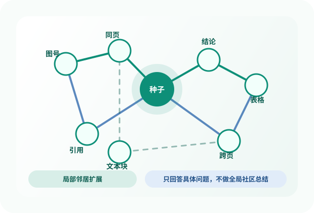
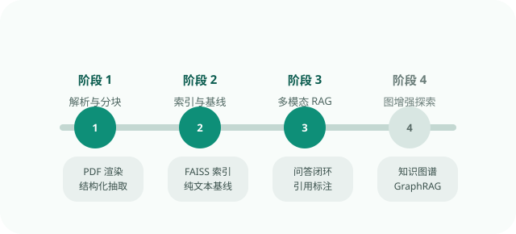

文档天然多模态
文本、图表、表格、版面结构混在一起。只看纯文本， 很容易丢掉图像与版面中的关键信息。
基于 Qwen2.5-VL 与 LangChain 的多模态文档问答设计， 以轻量文档图增强作为进阶方向。
文本、图表、表格、版面结构混在一起。只看纯文本， 很容易丢掉图像与版面中的关键信息。
“图 3 说明了什么”这类问题并不只依赖单段文字， 还可能关联图号、页面、章节结论和上下文引用。
传统 RAG 能找到“像答案”的片段， 但不擅长表达“这个片段为什么和那个图有关”。
在先满足课程题目 3 最低要求的前提下， 多模态信息能否显著提升文档问答效果；进一步引入轻量图结构后， 是否能在多跳推理问题上提供额外收益？
PDF / 图像输入，经 PyMuPDF 渲染为页面图像。
用 Qwen2.5-VL 抽取文本、表格、图表描述与页码元数据。
用 LangChain + FAISS 建立可检索的 Document 索引。
检索文本块与原页面图像，共同送入 VLM 回答问题。
输出页码、图号等可追踪引用，满足题目 3 的答题要求。
先保证上传、问答、引用、评测四件事跑通。
GraphRAG 只在主链路稳定之后增加，不抢主线资源。
每个模块都要能解释“为什么做”和“如果没做成怎么办”。

当前增强部分只面向具体问题的局部图检索： 种子节点、邻居扩展、局部证据融合，而不是宏观主题总结。
3 份含图表、表格和跨节引用关系的论文，用于构建自建测试集。
重点验证图表理解能力，检查视觉信息是否真正带来收益。
作为结构化文档问答补充，增强评测的可比性与覆盖面。
页面解析结果不统一，后续索引会被带偏。
同名实体、别名、缩写跨页难对齐，图谱可能误导回答。
四组系统同时推进，容易让所有链路都不完整。
纯文本组与多模态组模型能力不完全等价。

先做解析、索引、问答、评测四步主线，再尝试图增强与多跳推理。